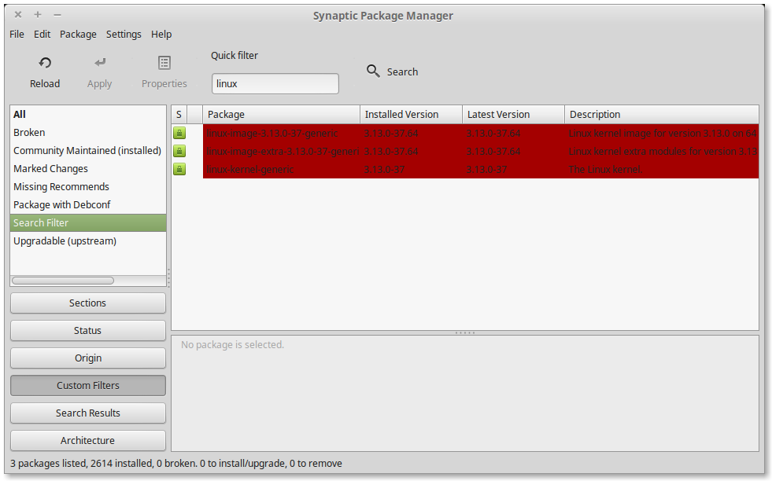

server dan command line - labs127.io and me
Table of Contents
1 Mencegah SSH Timeout
Bagi Anda yang sering melakukan koneksi SSH ke server, tentu sangat
mengganggu bukan? Solusinya mudah, tambahkan atau buat konfigurasi baru
di berkas ~/.ssh/config:
Host *
ServerAliveInterval 10
2 Membuat / Menambah swap di Ubuntu
Terkadang karena keterbatasan memory, kita tidak dapat melakukan
instalasi paket atau library tertentu di server. Hal ini pernah penulis
alami ketika akan memasang library pandas. Daripada harus upgrade
droplet, saya coba membuat swap di server tersebut, dan setelah membuat
swap sebesar 1GB, library tersebut berhasil terpasang dengan sukses.
Berikut ini langkah-langkahnya:
# create new partition 1M * 1024 = 1GB dd if=/dev/zero of=/swapfile bs=1M count=1024 # set as swap mkswap /swapfile # activate the swap once swapon /swapfile # add to /etc/fstab to auto load when reboot [optional] /swapfile swap swap defaults 0 0
3 Set Locale di Ubuntu Server
Ini hal wajib yang perlu dilakukan ketika setup server, karena jika belum diset, biasanya ada beberapa masalah yang muncul, misal tidak mau login ke mongo console atau psql (postgresql).
Cara untuk setting locale (ubuntu) adalah dengan menyunting berkas
/etc/default/locale dan isikan baris config berikut:
LC_ALL="en_US.UTF-8" LANG="en_US.UTF-8" LANGUAGE="en_US.UTF-8"
Selanjutnya silakan re-login atau reboot, agar setting berlaku.
4 Mengatur depth level command tree
Perintah berikut ini membatasi kedalaman output perintah tree
menjadi maksimal 2 level saja.
tree -L 2 somedir/
5 Lock Package Version di Linux Mint
Salah satu kelebihan menggunakan Linux adalah mudahnya melakukan update paket melalui package manager yang biasanya sudah disediakan secara default oleh tiap-tiap distro. Namun ini juga terkadang membawa masalah tersendiri, kenapa?
Misalnya nih, saya baru saja membeli VGA Card merk ATI. Karena dukungan driver yang tidak terlalu bagus (dibanding NVIDIA), terkadang ketika ada perubahan versi kernel, maka driver yang sudah terpasang menjadi tidak berjalan secara sempurna.
Untuk itu, setelah konfigurasi mapan, saya berpikir untuk me-lock versi dari kernel yang saya gunakan. Dan ternyata Linux menyediakan fitur untuk itu.
Kalau Anda pengguna Ubuntu (atau Mint), Anda dapat melakukan langkah berikut:
Go to System -> Administration -> Synaptic Package Manager. Highlight the package and choose menu Package -> Lock Version.
Jika sudah, maka paket tersebut akan ada simbol gembok dan berwarna merah, seperti yang terlihat dalam tangkapan layar berikut:

Note:
This may not applied to server which need to be as up-to-date as possible.
6 Setting git dan SSH key
Capek kan kalo harus ngetik username password setiap kali push
atau pull? Biar tidak ngetik terus, kita membuat SSH key
saja. Caranya sebagai berikut:
Membuat SSH key
ssh-keygen -t rsa -b 4096 -C "your_email@example.com"
Selanjutnya ikuti saja petunjuknya, kalau saya memilih menyimpan key
di ~/.ssh/id_rsa.pub, which is default. Untuk passphrase,
silakan diisi sesuai keinginan (kosong pun tidak masalah, tapi
sebaiknya diisi).
Menambahkan SSH key ke git
Untuk github, silakan menuju profile, kemudian Settings, klik SSH keys, kemudian Add SSH key.
Title bebas mau dinamai apa saja, tapi sebaiknya berupa string yang
terkait dengan mesin kita, misal bantengpc, untuk memudahkan
identifikasi saja sih, bahwa sshkey ini kepunyaan mesin bantengpc.
Salin isi dari ~/.ssh/id_rsa.pub kemudian paste ke input
"Key". Kemudian klik Add key.
Testing
Ketik perintah berikut:
ssh -T git@github.com
Untuk pertama kali, maka akan muncul pesan konfirmasi yang isinya kurang lebih sebagai berikut:
The authenticity of host 'github.com (207.97.227.239)' can't be established. # RSA key fingerprint is 16:27:ac:a5:76:28:2d:36:63:1b:56:4d:eb:df:a6:48. # Are you sure you want to continue connecting (yes/no)?
Jawab saja yes, kemudian jika berhasil akan muncul keterangan sebagai berikut:
Hi kholidfu! You've successfully authenticated, but GitHub does not # provide shell access.
Selanjutnya yang tidak kalah penting adalah memastikan bahwa url remote, berbentuk seperti ini:
[remote "origin"]
url = git@github.com:kholidfu/kholidfu.github.io.git
Ini berarti kita bisa menggunakan ssh key untuk login dan push. Tetapi jika format url masih seperti ini:
[remote "origin"]
url = https://github.com/kholidfu/kholidfu.github.io.git
Silakan disesuaikan, karena format di atas melakukan autentikasi menggunakan format usermame/password.
7 Custom domain di localhost
Seringnya Anda melihat menggunakan IP 127.0.0.1 atau localhost saja,
bagaimana membuatnya menjadi seolah-olah punya nama, seperti misalnya
test.com atau banteng.app?
Tambahkan atau sunting berkas /etc/hosts:
127.0.0.1 localhost banteng.app test.com
Sekarang localhost dapat Anda akses juga menggunakan test.com atau
banteng.app.